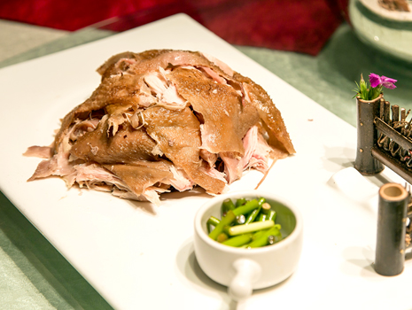
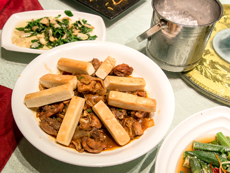
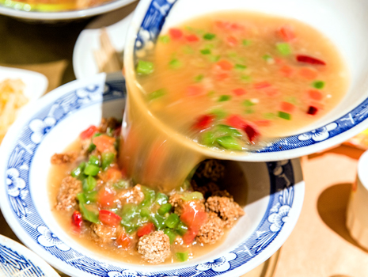
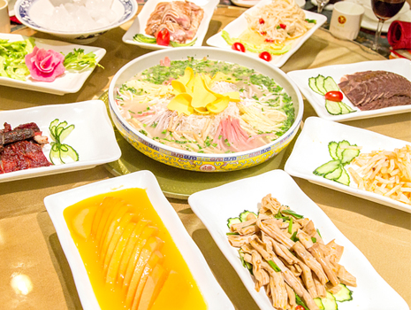
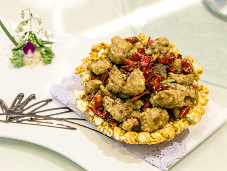
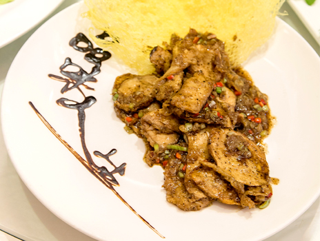

豫菜之好吃讓我回味無窮
豫菜是中國菜的代表之一，所以來之前我就非常想試試豫菜特色，一嚐之下果然不負我望，所謂東辣西酸南甜北鹹，全部融合在中原河南，這次我們品嚐了舌尖上中國拍攝的餐廳、大讚他們的河南美食，也當了皇帝豪邁品嚐流水席24道菜，最後還讓我吃到出乎意料美味的素菜齋，非常滿足，豫菜席價格也不貴，整體可說CP值相當高。
豫菜風味
豫(河南)由於位於中國大陸中心位置，也就是所謂的「中原」，因此揉合了百家味覺之長，另有一說則是所謂的東辣西酸南甜北鹹，都是從河南分散出去的，不管是哪一種，豫菜恰到好處的中庸之味，正是它受歡迎的原因。
 
洛陽水席
洛陽水席相傳是預測武則天當皇帝24年，所設計的24道菜，有葷有素、酸甜鹹辣味道多樣，又以湯湯水水的熱菜為主，像流水一樣的推出，澎湃又美味，因而得名。現今洛陽人把水席看成是重要宴席，特別用來款待遠方來客。
 
少林素齋
少林寺景區除了內部素齋館，周邊的登封永泰寺素食餐館也很受歡迎，以新鮮山產、或齋館自家摘種的有機蔬菜作為食材，烹調出一道道美味的齋菜，就算非素食者也食指大動，成為少林寺遊覽時的必嚐的佳餚。
 